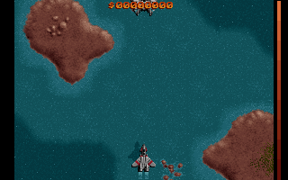
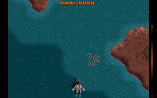

Brief — exact text delivered to every model
Task Brief: Port Raptor: Call of the Shadows (Sector 1) to HTML5
1. Goal
Port Raptor: Call of the Shadows (Apogee, 1994) — sector 1 only, the shareware content — from the original DOS game to a browser game built with HTML5 canvas, vanilla JavaScript, and the Web Audio API. The port must render real game assets (graphics and sounds) extracted from the original shareware data files, either at build time or at runtime — no placeholder art, no placeholder audio. Do not use any external frameworks or libraries beyond what ships in the browser (no React, Phaser, PixiJS, Howler, etc.). A small vanilla test runner is fine if you want one, but it is not required.
2. Worktree Layout
Your worktree root (./) contains the GPL C/ASM source of the original DOS game, provided for reference and porting purposes, under SOURCE/, GFX/, audiolib/, and apodmx/. It also contains the original shareware game data files under ./data/ — GLB archive files, the shareware RAP.EXE for reference, and whatever else the shareware distribution contained.
Build your web port as new files alongside/above this existing tree (for example index.html, an asset-extraction or build script, and your JS source), and keep the original source tree intact for reference — do not delete or rewrite it.
You must write and maintain a README documenting a working dev-server command (for example npx serve ., python -m http.server, or similar) so that the port can be opened and played in a browser at any milestone. Keep this command accurate and working as you go — it will be used to check your progress at each milestone.
3. Standing Rules
- Vanilla JavaScript + HTML5 canvas + Web Audio API only. No external runtime frameworks or libraries. A lightweight bundler or dev-only tool is fine if it produces plain output, but avoid dependency-heavy tooling.
- Always leave behind a documented, working dev server command that serves a working build.
- Commit to git after completing each milestone (M1 through M5, below), so progress is checkpointed.
- Sector 1 (shareware) content only — you do not need to support later sectors or the registered/full game.
4. Milestone Ladder (M1–M5)
This is the actual grading spec. Copied verbatim:
- M1: level-1 background + player ship rendered on canvas from the real GLB data. Graded by screenshot similarity (SSIM) to a reference DOSBox frame on the playfield region (target >= 0.80), and >= 90% of the reference color palette present.
- M2: arrow keys move the ship; firing spawns a projectile.
- M3: wave-1 enemies spawn; a projectile hit decrements enemy HP or removes the enemy; the player can die.
- M4: HUD (score/shields) renders; a Web Audio context is running and at least one sound effect is triggered on firing.
- M5: the sector-1 loop completes — the wave counter advances through wave 9 and a sector-complete screen appears.
5. Grader Interface Contract
You must implement exactly this. An automated Playwright script checks against it — this is a hard requirement, not a suggestion.
- A canvas element
<canvas id="raptor-canvas">whose internal pixel buffer is exactly 320x200 (canvas.width === 320,canvas.height === 200), independent of any CSS display scaling. - Controls:
ArrowUp/ArrowDown/ArrowLeft/ArrowRightmove the ship; the Space bar fires. Use standardkeydown/keyupDOM listeners — no custom input hook needed. - A live-updated global object
window.__raptorwith this exact shape:
window.__raptor = {
ready: boolean, // true once the first frame (background + player ship) is drawn from real game data
player: { x: number, y: number, alive: boolean },
projectiles: [ { x: number, y: number, owner: 'player'|'enemy' }, /* ... */ ],
enemies: [ { id: string|number, hp: number, x: number, y: number, alive: boolean }, /* ... */ ],
hud: { score: number, shields: number },
audio: { contextState: 'running'|'suspended'|'closed', sfxCount: number }, // sfxCount increments on every SFX triggered
wave: number, // current wave within sector 1
sectorComplete: boolean
};- Keep this object's fields in sync with actual game state at all times. The grader polls it, drives real keyboard input to test M2/M3/M4/M5, and takes a canvas screenshot to test M1. For M5 the grader is allowed to auto-play (hold fire, jitter movement) rather than requiring skilled play, so you do not need to build any special "autoplay" or "god mode" feature — just make the interface accurately reflect real game state during ordinary play.
Scripted follow-up turns
Milestone M1: parse the real GLB data and render the level-1 background plus the player ship on the 320x200 canvas, with window.__raptor.ready = true once drawn. Commit when done and tell me the dev-server command.Milestone M2: arrow keys move the ship and Space fires a projectile; keep window.__raptor.player and .projectiles live. Commit when done.Milestone M3: wave-1 enemies spawn and move; player projectiles hit them (hp decrements / enemy removed); the player can die; window.__raptor.enemies and player.alive live. Commit when done.Milestone M4: HUD with score and shields; Web Audio context running with at least one real SFX from the game data triggered on fire; window.__raptor.hud and .audio live. Commit when done.Milestone M5: the sector-1 loop — waves advance to 9 and a sector-complete screen appears; window.__raptor.wave and .sectorComplete live. Commit when done and write a short PORTING-NOTES.md describing what you ported from where and what remains.
Lane A · OMP harness
the model uses real dev tools (read/edit/run) — all tasks
commits (2)
- e1877c5 (20:20:34) "Add HTML5 port: wave-1 enemies, player death, live __raptor.enemies/player.alive" -- single combined commit covering M1+M2+M3 work (no separate commit was made after M1 or after M2 individually, despite each milestone turn instructing 'commit when done').
- 6806d18 (20:21:49) "M4: HUD (score+shields) and live Web Audio SFX on fire" -- M4 commit.
session notes (window.__raptor contract adherence, etc.)


Process
- input tokens billed across all calls (context re-sent each call)
- 42,655,451
- completion tokens
- 691,792
- reasoning tokens
- not recorded
- API calls
- 315
- tool calls
- 329
- turns
- 6
- wall-clock
- 48.5m
- reverts / dead-ends
- 0
- files changed / loc
- +2,486 / -20, 9 files
- image match — M1 / M3
- M1: SSIM 0.49, palette 0.86 · M3: not measured -- only the M1 frame has a DOSBox reference (checked _raptor-support/reference/: sector1-wave1-gameplay.png is the only gameplay capture; no M3-moment reference frame exists, and none was captured for this per the hard rule against any further DOSBox capture)
diff preview
diff --git a/js/glb.js b/js/glb.jsindex 66a4c2a..66f37d7 100644--- a/js/glb.js+++ b/js/glb.js@@ -54,7 +54,11 @@ export class GLBFile { }); } this._byName = new Map();- for (const it of this.items) this._byName.set(it.name, it);+ for (const it of this.items) {+ // GLB_GetItemID returns the FIRST item whose name matches; later duplicate+ // names (e.g. MOLE_PIC at 854..858) must not clobber it.+ if (!this._byName.has(it.name)) this._byName.set(it.name, it);+ } } itemSize(nameOrIndex) {diff --git a/tools/_autoplay.mjs b/tools/_autoplay.mjsnew file mode 100644index 0000000..04f8236--- /dev/null+++ b/tools/_autoplay.mjs@@ -0,0 +1,36 @@+import { loadGLB } from '../js/glb.js';+import { Raptor } from '../js/engine.js';+const glb0 = await loadGLB('data/FILE0000.GLB');+const glb1 = await loadGLB('data/FILE0001.GLB');+const g = new Raptor(glb0, glb1);+g.init();+g.setAudio({ play: () => false });+g.godmode = true;+// patch getItem to log tiny items before returning+const origGet = g.getItem.bind(g);+g.getItem = (n) => {+ const d = origGet(n);+ if (d.length < 20 && typeof n === 'number') {+ console.log('TINY ITEM', n, 'len', d.length, 'wave', g.wave, 'frame', g.frameNo);+ throw new Error('tiny item ' + n);+ }+ return d;+};+g.startWave(0);+let dir = 1, strafeT = 0;+const autoplay = () => {+ g.keys.fire = true;+ if (g.playerx < 10) dir = 1; else if (g.playerx > 260) dir = -1;+ if (++strafeT % 120 === 0) dir = -dir;+ g.keys.left = dir < 0; g.keys.right = dir > 0;+ g.keys.down = g.playery < 150; g.keys.up = g.playery > 180;+};+let wave = 0, between = 0, complete = false, frames = 0;+while (!complete && frames < 300000) {+ frames++;+ if (between > 0) { between--; autoplay(); if (between === 0) { wave++; g.startWave(wave); } continue; }+ autoplay();+ g.frame();+ if (g.end_wave) { if (wave >= 8) { complete = true; g.sectorComplete = true; } else between = 60; }+}+console.log('complete:', complete, 'wave:', wave + 1, 'frames:', frames, 'score', g.score);
commits (1)
- 0005fbadbaa652b89c30967d96d1f52f56102ca6 (2026-08-21 04:47:23 EDT) "M1: level-1 background + player ship from real GLB data" -- only commit made against the base install commit (4fd5b8f).
session notes (window.__raptor contract adherence, etc.)

M1 crop — screenshot pending
playable build not published yet
Process
- input tokens billed across all calls (context re-sent each call)
- 102,561,694
- completion tokens
- 451,887
- reasoning tokens
- not recorded
- API calls
- 789
- tool calls
- 848
- turns
- 2
- wall-clock
- not recorded
- reverts / dead-ends
- 1
- files changed / loc
- +32,880 / -19, 9 files
- image match — M1 / M3
- M1: SSIM 0.00, palette 0.03 · M3: not measured -- only the M1 frame has a DOSBox reference, and M3 was never reached (turn 3 not attempted)
Session transcript
Limitations
Raptor ladder — known limitations
- M1 is frame-timing sensitive. The DOSBox reference frame was captured at a fixed, non-deterministic-to-reproduce point in wave-1 gameplay (a specific terrain-scroll offset and enemy layout). A model's screenshot is taken at whatever moment
window.__raptor.readyfirst flips true, which will generally land at a different scroll/spawn position even from a faithfully-ported, deterministic RNG. A low SSIM can therefore reflect frame misalignment rather than a real rendering-fidelity gap; this applies identically to both models and is not corrected for. - M5's autoplay was amended after calibration. The original naive policy (hold fire, jitter one random arrow key every ~1.5s) was pre-committed to be replaced with a state-aware
window.__raptor-only dodge if the original shareware game, driven by that same naive policy in DOSBox, could not itself survive — which calibration confirmed (destroyed in <30s in 3/3 runs), so the amendment was applied identically to both models before either was scored. - Commit hygiene is not scored. Milestone turns request a commit after each step, but the checks run against the model's actual working-tree state at session end, uncommitted changes included; a model that under-commits is not penalized on the primary ladder score for that alone.
- n=1 per model. Unlike the bug-fix task classes (n=2), Raptor runs once per model per effort setting, for cost reasons; a single run's result is not averaged against any other attempt of the same milestone turns.